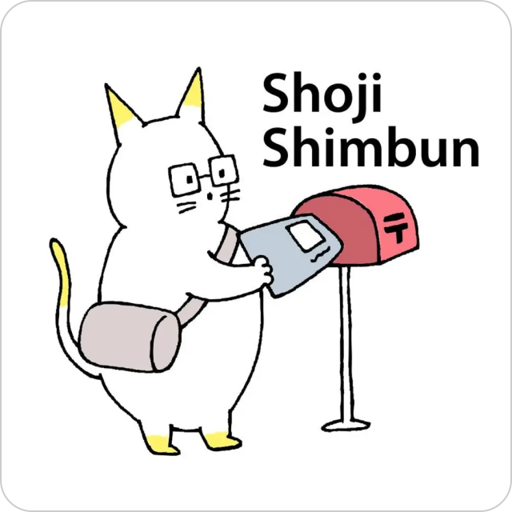
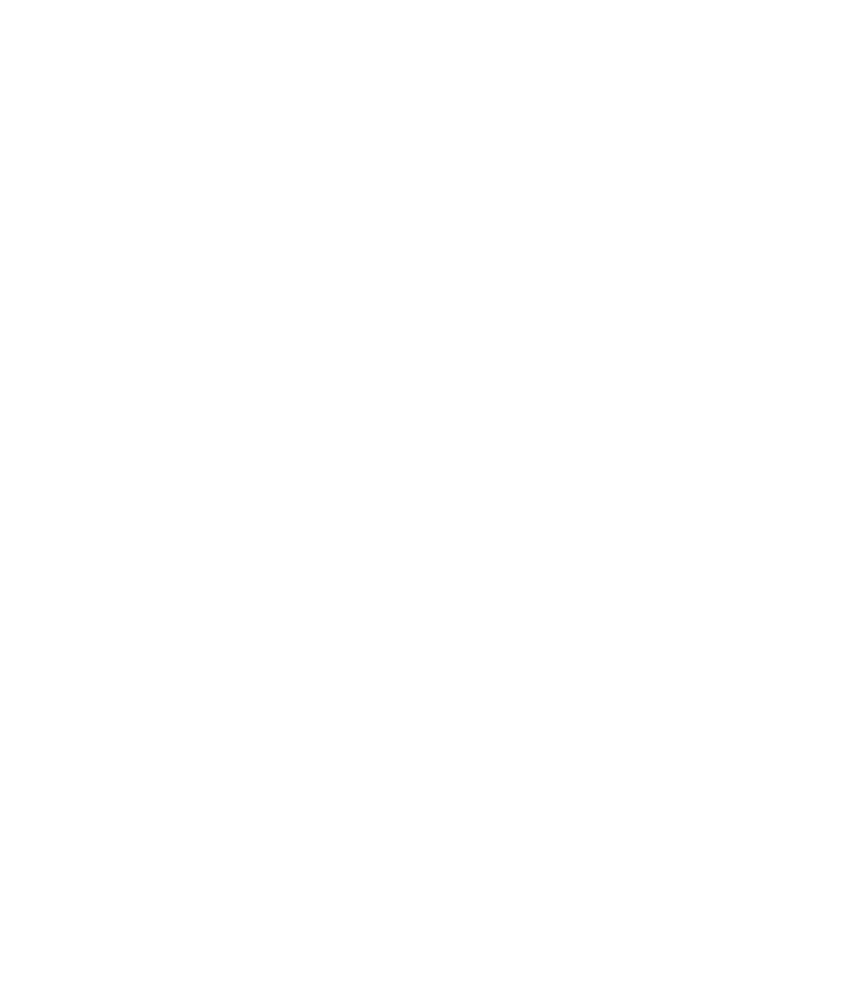
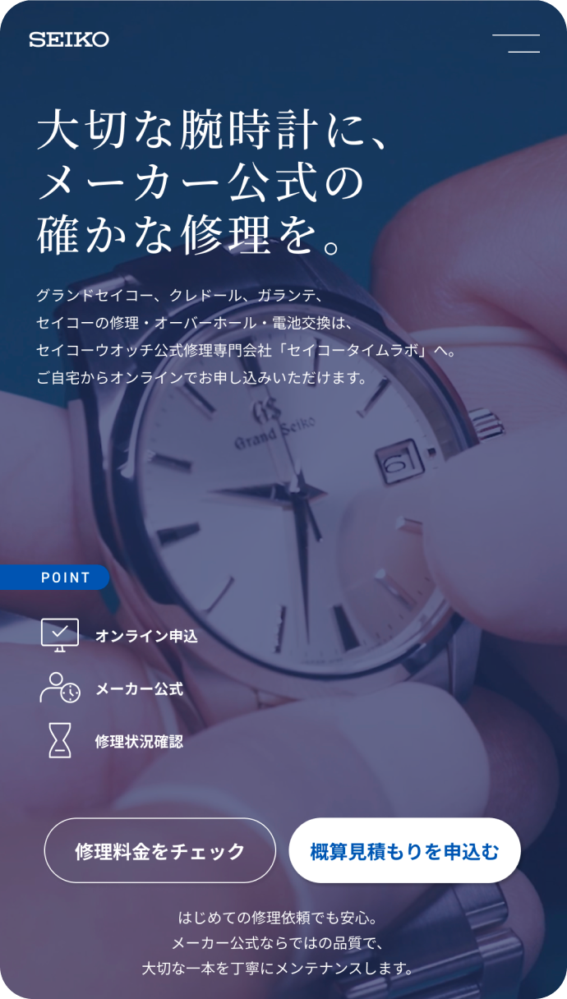
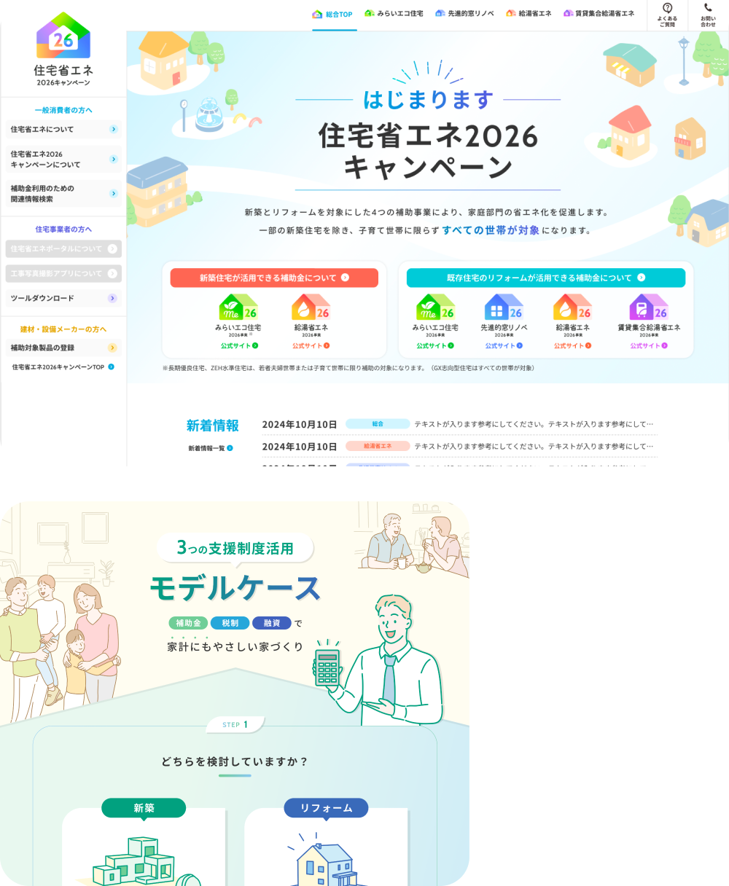
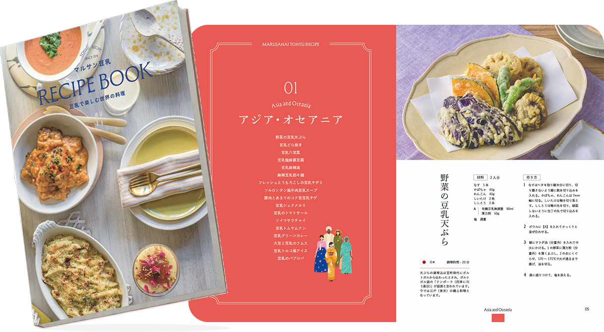
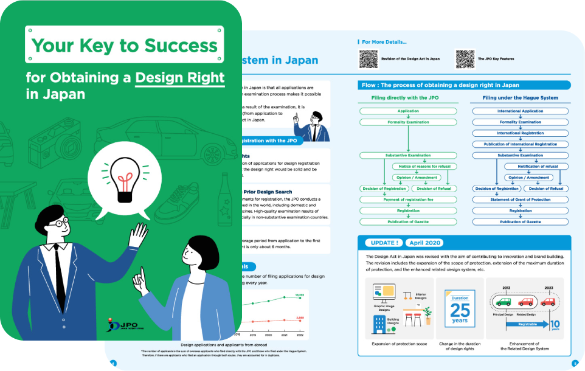

（有）庄司新聞店さまのイラストを担当

マーケティング情報や原稿をもとにリサーチ・素材制作を行い、ワイヤーフレームからビジュアルデザインまで一貫して担当。
Web Design 一覧（PDF）Web / UI・UX Design ｜ Figma

Web / UI・UX Design ｜ Figma

フライヤー・冊子・名刺など、構成からビジュアルデザインまで一貫して制作。
冊子 / デザイン ｜ InDesign

冊子 / デザイン ｜ Illustrator
